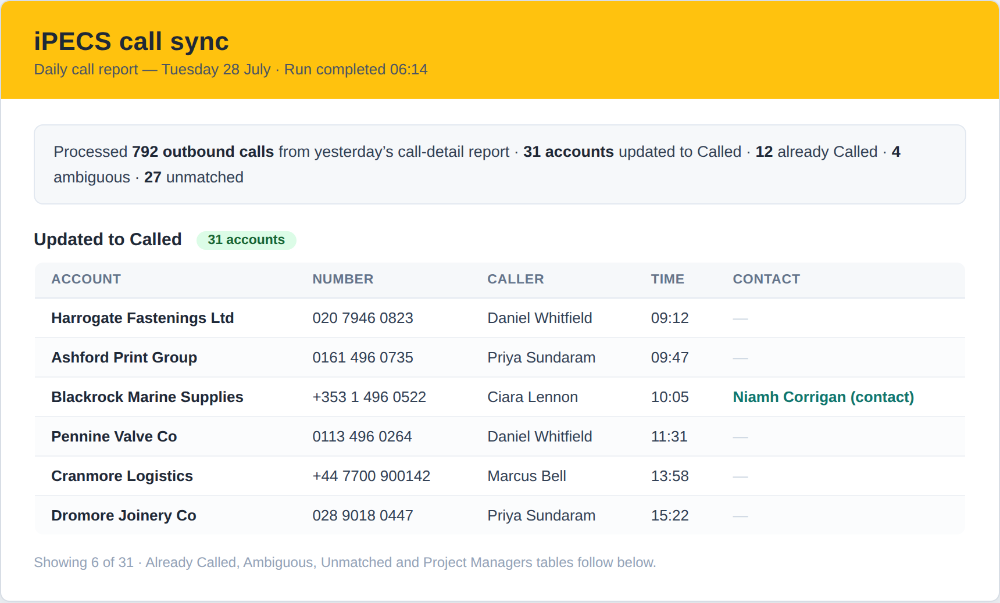
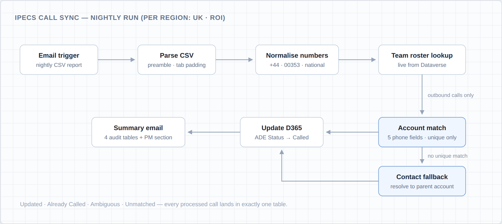
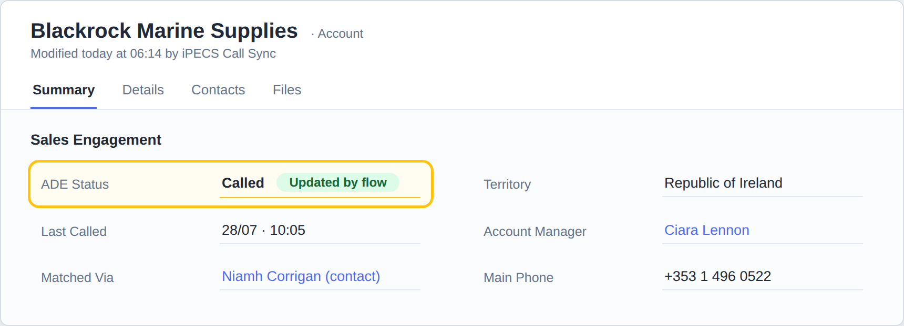

Zero-touch pipeline that turns daily phone-system call reports into live CRM account statuses for two regions
Sales managers had no reliable view of which customer accounts the ADE sales team had actually called. Call data lived in the iPECS phone system; account status lived in Dynamics 365; reconciliation between the two was manual, or more often skipped. I built a zero-touch pipeline that closes that gap: every night, the phone system's emailed call-detail report is parsed, matched against customer accounts, and turned into live CRM statuses — with a full audit trail landing in the managers' inboxes before the working day starts.
The two systems that together answered the question “have we called this account?” had no connection to each other. The iPECS phone system knew every call that was dialled, but nothing about accounts. Dynamics 365 held the account list and an ADE Status field, but only knew what someone remembered to type into it.
Reconciling them meant a person reading a raw call report against a CRM view — across two regions, in three phone-number formats, against accounts that can hold a number in any of five different fields. In practice it didn't happen, and the account statuses managers planned around were stale.
Two region-specific Power Automate flows — one for the UK, one for the Republic of Ireland — trigger on the nightly emailed call-detail CSV. Each run walks the same pipeline:
Parse the raw report. The CSV arrives with a preamble to skip and tab-padded fields to clean before a single row can be trusted.
Normalise every dialled number. UK, ROI and international formats (+44, 00353, national dialling) are collapsed into one canonical form so a number stored one way in the CRM still matches a call dialled another way.
Pull the roster live. The sales-team roster is read from Dataverse on every run — no hardcoded users, so team changes never require a flow change.
Match and update. Each outbound call is matched against customer accounts across five phone fields, with a contact-level fallback that resolves contacts to their parent account — including the address-block phone fields. The account's ADE Status is set to “Called” on unique matches only; anything ambiguous is reported, never written.
Report everything. A manager summary email closes each run with four audit tables — Updated, Already Called, Ambiguous, Unmatched — plus a report-only Project Managers section.
The pipeline runs entirely on the nightly email as its trigger — no polling, no agents on the phone system. A Power Automate flow per region parses and normalises the report, reads the sales-team roster live from Dataverse, and runs the match engine: five account phone fields first, then a contact-level fallback that resolves to the parent account. Unique matches are written back to the account's ADE Status over the OData Web API; everything else is only reported. The flows themselves are build artefacts — a Python generator emits importable flow packages, versioned v1 through v9, so deployments update in place instead of being rebuilt by hand in the designer.
The write path is deliberately conservative: only a unique match may touch a record, updates go through the standard OData Web API, and the summary email is the contract — if a call was processed, it appears in exactly one of the four audit tables, so a manager can always trace why an account did or didn't change.



All screenshots are illustrative reconstructions — every company, person and phone number shown is fictitious.
The question “which accounts have we actually called?” now has a live answer. Account statuses reflect real dialled calls from the previous day, in both regions, without anyone touching a record — and the summary email gives managers a daily, auditable view of exactly what changed and why.
Because the flows are generated rather than hand-built, the nine iterations it took to get the parsing, normalisation and matching rules right shipped as clean update-in-place deployments — the pipeline improved version over version without ever being rebuilt in the designer.